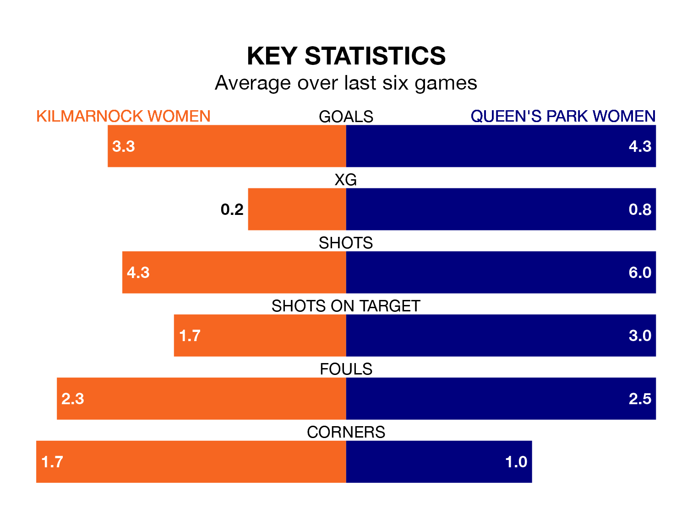

SWPL 2's top two sides face each other at the BBSP Stadium Rugby Park in Sunday's early kick-off, when second-placed Kilmarnock Women host Queen's Park Women.
Kilmarnock have picked up 11 wins and three draws from 18 games so far this season, and sit 10 points below the visitors going into the 2pm match.
Queen's Park, meanwhile, have won 15 and drawn one, picking up 46 points.
With 71 goals in 18 games so far this season, Queen's Park are the league's highest scorers with 3.9 goals per game. And they are conceding fewer than average, letting in 15 goals at a rate of 0.8 per game.
Kilmarnock are also above average scorers, with 2.8 goals per game, compared to a league average of 2.0. They have conceded 1.2 goals per game.
In the last 10 years, Kilmarnock and Queen's Park have played each other on 12 occasions. They won five each, and they drew twice.
On average, Kilmarnock scored 1.7 goals and Queen's Park 1.3 in those matches.
Their last meeting was on December 10, when Queen's Park won 1-0 at home.
The hosts are in good form in SWPL 2, with four wins and a draw from their last six games.
And also with four wins and a draw over that period, the away team's form is identical – they have both taken 13 points from 18.
Kilmarnock's last match was on February 18, a 10-0 win against Stirling University Women, with getting the goals for Kilmarnock.
Queen's Park beat St. Johnstone Women 5-0 last time out, also on February 18, with on the scoresheet.
Updated: 12:18 (UTC), 19/02/24